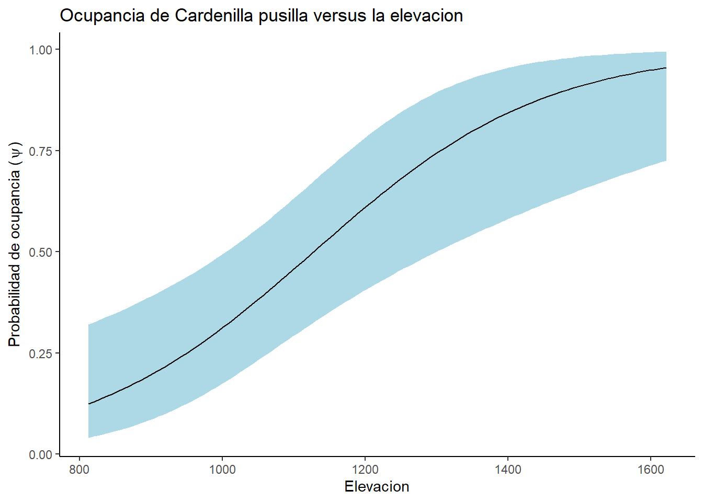

Aves <- read.csv("data/AvesHabitatUm.csv")Clase 6a: Uso de Unmarked, Estimación de ocupacia
Seleccionar variables necesarias
library(tidyverse)Warning: package 'lubridate' was built under R version 4.3.2── Attaching core tidyverse packages ──────────────────────── tidyverse 2.0.0 ──
✔ dplyr 1.1.3 ✔ readr 2.1.4
✔ forcats 1.0.0 ✔ stringr 1.5.0
✔ ggplot2 3.4.3 ✔ tibble 3.2.1
✔ lubridate 1.9.3 ✔ tidyr 1.3.0
✔ purrr 1.0.2
── Conflicts ────────────────────────────────────────── tidyverse_conflicts() ──
✖ dplyr::filter() masks stats::filter()
✖ dplyr::lag() masks stats::lag()
ℹ Use the conflicted package (<http://conflicted.r-lib.org/>) to force all conflicts to become errorsAvesLimpia <- Aves %>%
select(Site, VEGID, Type, ALTITUDE, Area_Basal, Hora, Fecha, Cielo, Viento, Especies, Abundancia) %>%
mutate(Fecha = as.Date(Fecha, format = "%m/%d/%Y")) %>%
mutate(Hora = as.integer(str_replace(Hora, ":", "")))
AvesOrdenadas <- AvesLimpia %>%
arrange(Site, Especies, Fecha, Hora, VEGID, Type, ALTITUDE, Area_Basal) %>%
group_by(Site, Especies, Fecha, Hora, VEGID, Type, ALTITUDE, Area_Basal) %>%
summarise(Abundancia = max(Abundancia)) %>%
group_by(Site, Fecha, Hora, Especies, VEGID, Type, ALTITUDE, Area_Basal) %>%
mutate(Orden = factor(row_number())) %>%
filter(Orden %in% c(1, 2, 3))`summarise()` has grouped output by 'Site', 'Especies', 'Fecha', 'Hora',
'VEGID', 'Type', 'ALTITUDE'. You can override using the `.groups` argument.CarpusPivot <- AvesOrdenadas %>%
pivot_wider(names_from = Especies, values_from = Abundancia, values_fill = 0) %>%
select(Site, VEGID, Type, ALTITUDE, Area_Basal, Fecha, Hora, Orden, CARPUS)
CarpusPivotOrden <- CarpusPivot %>%
arrange(Site, VEGID, Type, ALTITUDE, Area_Basal, CARPUS, Fecha, Hora) %>%
group_by(Site,VEGID, Type, ALTITUDE, Area_Basal, CARPUS) %>%
mutate(Orden = factor(row_number())) %>%
filter(!is.na(Site))
head(CarpusPivotOrden)# A tibble: 6 × 9
# Groups: Site, VEGID, Type, ALTITUDE, Area_Basal, CARPUS [3]
Site VEGID Type ALTITUDE Area_Basal Fecha Hora Orden CARPUS
<int> <chr> <chr> <dbl> <dbl> <date> <int> <fct> <int>
1 1 1 F 879 10 2016-02-10 802 1 0
2 1 1 F 879 10 2016-03-19 815 2 0
3 1 1 F 879 10 2016-03-31 725 3 0
4 3 3P C 825 7.8 2016-03-17 1125 1 0
5 3 3P C 825 7.8 2016-03-31 1200 2 0
6 4 4P F 868 NA 2016-03-17 1418 1 0Pasar cada replica en columnas diferentes de acuerdo a la especie de ave
# Crear un conjunto de datos con todos los niveles de Orden por Site
CARPUSunmarked <- CarpusPivotOrden %>%
filter(!is.na(Fecha)) %>%
mutate(Orden = as.numeric(Orden)) %>%
complete(Orden = 1:3) %>%
mutate(CARPUS = ifelse(is.na(Fecha), NA, CARPUS),
CARPUS = replace_na(CARPUS, 50))
# Pivot_wider
CARPUSunmarkedReady <- CARPUSunmarked %>%
mutate(Fechaord = yday(Fecha)) %>%
group_by(Site, Orden, VEGID, Type, ALTITUDE, Area_Basal) %>%
summarise(CARPUS = max(CARPUS),
Fechaord = max(Fechaord),
Hora = max(Hora)) %>%
ungroup() %>%
group_by(Site, VEGID, Type, ALTITUDE, Area_Basal) %>%
pivot_wider(names_from = Orden,
values_from = c(Fechaord, Hora, CARPUS),
values_fill = 0) %>%
mutate(CARPUS_1 = replace(CARPUS_1, CARPUS_1 == 50, NA)) %>%
mutate(CARPUS_2 = replace(CARPUS_2, CARPUS_2 == 50, NA)) %>%
mutate(CARPUS_3 = replace(CARPUS_3, CARPUS_3 == 50, NA)) `summarise()` has grouped output by 'Site', 'Orden', 'VEGID', 'Type',
'ALTITUDE'. You can override using the `.groups` argument.## Definir ocasiones de deteccion
CARPUS_y <- CARPUSunmarkedReady[,12:14]
CARPUS_y[CARPUS_y > 1] <- 1 # Pasar matrix a 0 y 1
## Definir los variables asociados a la deteccion:
Fecha_CARPUS= list(Fecha=CARPUSunmarkedReady[,6:8])
# Y quien realizo la observacion
Hora_CARPUS= list(Hora=CARPUSunmarkedReady[,9:11]) ## Definir los variables de covarianza
CARPUS_siteCovs <- CARPUSunmarkedReady[,c("Type", "ALTITUDE", "Area_Basal")]library(unmarked)
## CREAR DATA FRAME
CARPUSunmarked_df <- unmarkedFrameOccu(y = CARPUS_y, siteCovs = CARPUS_siteCovs,
obsCovs=c(Fecha_CARPUS, Hora_CARPUS))Warning: siteCovs contains characters. Converting them to factors.summary(CARPUSunmarked_df)unmarkedFrame Object
44 sites
Maximum number of observations per site: 3
Mean number of observations per site: 1.68
Sites with at least one detection: 22
Tabulation of y observations:
0 1 <NA>
44 30 58
Site-level covariates:
Type ALTITUDE Area_Basal
C:20 Min. : 812 Min. : 1.40
F:24 1st Qu.: 952 1st Qu.:10.20
Median :1148 Median :13.40
Mean :1138 Mean :18.70
3rd Qu.:1276 3rd Qu.:22.35
Max. :1622 Max. :47.80
NA's :1
Observation-level covariates:
Fecha Hora
Min. :25.00 Min. : 247.0
1st Qu.:62.25 1st Qu.: 826.0
Median :77.00 Median : 947.5
Mean :71.91 Mean : 969.2
3rd Qu.:85.00 3rd Qu.:1097.5
Max. :92.00 Max. :1426.0
NA's :58 NA's :58 #### MODELAR DETECCION PRIMERO
ModelDet0 <- occu(~1 ~1, CARPUSunmarked_df) ##Null model
ModelDet1 <- occu(~Fecha ~1, CARPUSunmarked_df)Warning: Hessian is singular. Try providing starting values or using fewer
covariates.ModelDet2 <- occu(~Hora ~1, CARPUSunmarked_df)Warning: Hessian is singular. Try providing starting values or using fewer
covariates.ModelDet3 <- occu(~Fecha + Hora ~1, CARPUSunmarked_df)Warning: Hessian is singular. Try providing starting values or using fewer
covariates.library(AICcmodavg)
DetModels <- list(ModelDet0, ModelDet1, ModelDet2, ModelDet3)
DetNames <- c("Nulo", "Fecha", "Hora", "Fecha + Hora")
aictab(DetModels, DetNames, sort = TRUE)
Model selection based on AICc:
K AICc Delta_AICc AICcWt Cum.Wt LL
Nulo 2 65.29 0.00 0.58 0.58 -30.5
Hora 3 67.60 2.31 0.18 0.76 -30.5
Fecha 3 67.60 2.31 0.18 0.95 -30.5
Fecha + Hora 4 70.02 4.73 0.05 1.00 -30.5#### MODELAR DETECCION PRIMERO
ModelAbun0 <- occu(~1 ~ 1, CARPUSunmarked_df) ##Null model
ModelAbun1 <- occu(~1 ~ Type, CARPUSunmarked_df)
ModelAbun2 <- occu(~1 ~ ALTITUDE, CARPUSunmarked_df)
ModelAbun3 <- occu(~1 ~ Area_Basal, CARPUSunmarked_df)Warning: Some observations have been discarded because corresponding covariates
were missing.Warning: 1 sites have been discarded because of missing data.library(AICcmodavg)
AbunModels <- list(ModelAbun0, ModelAbun1, ModelAbun2, ModelAbun3)
AbunNames <- c("Nulo", "Type", "ALTITUDE", "Area_Basal")
aictab(AbunModels, AbunNames, sort = TRUE)
Model selection based on AICc:
K AICc Delta_AICc AICcWt Cum.Wt LL
ALTITUDE 3 56.63 0.00 0.90 0.90 -25.02
Type 3 61.59 4.95 0.08 0.97 -27.49
Area_Basal 3 64.70 8.06 0.02 0.99 -29.05
Nulo 2 65.29 8.66 0.01 1.00 -30.50summary(ModelAbun2)
Call:
occu(formula = ~1 ~ ALTITUDE, data = CARPUSunmarked_df)
Occupancy (logit-scale):
Estimate SE z P(>|z|)
(Intercept) -6.96386 2.02140 -3.45 0.000571
ALTITUDE 0.00618 0.00184 3.35 0.000802
Detection (logit-scale):
Estimate SE z P(>|z|)
8.08 11.4 0.71 0.478
AIC: 56.03341
Number of sites: 44
optim convergence code: 0
optim iterations: 58
Bootstrap iterations: 0 confint(ModelAbun2, type = "state", level = 0.95) 0.025 0.975
psi(Int) -10.925729341 -3.001987408
psi(ALTITUDE) 0.002565064 0.009787055fitstats <- function(Mod_global2) {
observed <- getY(Mod_global2@data)
expected <- fitted(Mod_global2)
resids <- residuals(Mod_global2)
sse <- sum(resids^2,na.rm=TRUE)
chisq <- sum((observed - expected)^2 / expected,na.rm=TRUE)
freeTuke <- sum((sqrt(observed) - sqrt(expected))^2,na.rm=TRUE)
out <- c(SSE=sse, Chisq=chisq, freemanTukey=freeTuke)
return(out)
}
(pb <- parboot(ModelAbun2, fitstats, nsim=100, report=1))
Call:
parboot(object = ModelAbun2, statistic = fitstats, nsim = 100, report = 1)
Parametric Bootstrap Statistics:
t0 mean(t0 - t_B) StdDev(t0 - t_B) Pr(t_B > t0)
SSE 13.3 0.679 2.82 0.416
Chisq 35.2 -4.923 11.61 0.683
freemanTukey 18.2 3.222 3.00 0.149
t_B quantiles:
0% 2.5% 25% 50% 75% 97.5% 100%
SSE 5.3 7.8 11 13 14 17 24
Chisq 21.9 23.3 33 39 45 59 98
freemanTukey 7.2 9.4 13 15 17 20 23
t0 = Original statistic computed from data
t_B = Vector of bootstrap samplescHat_pb <- pb@t0[2] / mean(pb@t.star[,2])CARPUS_ALTITUDE <- data.frame(ALTITUDE = seq(min(CARPUSunmarkedReady$ALTITUDE, na.rm = TRUE), max(CARPUSunmarkedReady$ALTITUDE, na.rm = TRUE), length.out = 100))
Carpus_ALTITUDE <- predict(ModelAbun2, newdata = CARPUS_ALTITUDE, type = "state")
Carpus_ALTITUDE$ALTITUDE <- CARPUS_ALTITUDE$ALTITUDE ggplot(data= Carpus_ALTITUDE, aes(x= ALTITUDE, y= Predicted))+
geom_ribbon(aes(ymin= lower,
ymax= upper), fill = "lightblue") +
geom_line(color= "black") +
labs(x = "Elevacion",
y = expression(paste("Probabilidad de ocupancia (", psi, ")", sep = "")))+
ggtitle("Ocupancia de Cardenilla pusilla versus la elevacion") +
theme_classic()